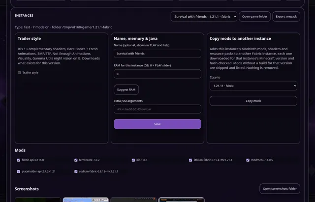

News · · v1.6.3
Vanta 1.6.3: copy your mods to another version
Set up a new Minecraft version in one click: Vanta adds your mods, shaders and packs to another instance, each downloaded for that version.
Moving to a new Minecraft version used to mean finding every mod again. In Vanta 1.6.3, open INSTANCES, pick the instance you like, choose Copy mods to another instance, and pick the target.
- Each Modrinth mod, shader and resource pack is downloaded for the target's Minecraft version and hash-checked, with its required dependencies.
- Mods that don't have a build for that version are skipped and listed, so you know what's missing.
- Nothing is removed from either instance, and mods you turned off aren't copied.
- Progress shows in the Downloads panel.
